原文连接:https://www.cnblogs.com/langda/p/11219541.html
本文是对函数式编程范式的系列文章从而拉开了与以下延续一个。
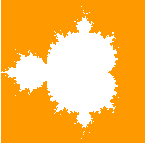
介绍
在JavaScript中，函数只是对象。因此，可以构造函数，作为参数传递，从函数返回或分配给变量。因此，JavaScript具有一流的功能。更准确地说，JavaScript支持以下内容：
- 高阶函数参数
- 产生高阶函数
- 嵌套函数
- 匿名功能
- 关闭
- 部分申请（ECMAScript 5）
通过函数表示数据
我们S是任何元素的集合a，b，c...（例如，桌子上的书本或欧几里得平面的点），并让S'是这些元素的任意子集（例如，桌子上的书本绿色或点半径1的圆心以欧几里德平面的原点为中心）。
所述特征函数 S'(x)的一组S'是其中任一相关联的功能true或false与每个元件x的S。
S'(x) = true if x is in S'
S'(x) = false if x is not in S'让我们S成为桌子上的一套书，让我们S'成为桌上的绿色书籍。设a和b是两个绿色的书，让c和d是在表中的两个红本本。然后：
S'(a) = S'(b) = true
S'(c) = S'(d) = false让S是集的欧几里德平面中的点，并且让S'在半径为1的在欧几里得平面（0,0）的原点为中心的圆的组的点的（单位圆）。让a和b在单位圆的两点，并让c并且d是在欧几里得平面的原点为中心的半径2的圆的两点。然后：
S'(a) = S'(b) = true
S'(c) = S'(d) = false因此，任何集合S'总是可以由其特征函数表示。一个函数，它将一个元素作为参数，true如果该元素在S'，false则返回，否则返回。换句话说，可以通过JavaScript中的函数表示集合（抽象数据类型）。
function set() { } 在接下来的部分中，我们将看到如何通过JavaScript以函数方式表示集合代数中的一些基本集合，然后我们将在集合上定义泛型二进制运算。然后，我们将在欧几里德平面的子集上对数字应用这些操作。集合是抽象数据结构，数字的子集和欧几里得平面的子集是抽象数据结构的表示，最后二元操作是适用于抽象数据结构的任何表示的通用逻辑。
JavaScript环境
要运行网站源码，您需要一个JavaScript引擎。有很多JavaScript引擎可用。在本节中，我将逐步介绍如何使用Ubuntu 16.04中的V8 JavaScript引擎来设置JavaScript环境。V8是一个用C ++编写的开源JavaScript引擎，用于谷歌Chrome，Node.js和V8.NET。设置也可以在Windows和macOS上完成。
- 获取V8源代码并编译它：
我通过在终端中运行以下命令，在Ubuntu 16.04上成功安装并执行了d8。
sudo apt-get install git mkdir ~/js cd ~/js git clone https://chromium.googlesource.com/chromium/tools/depot_tools.git depot_tools export PATH=~/js/depot_tools:"$PATH" fetch v8 cd v8 make native ~/js/v8/out/native/d8从git存储库下载V8源代码需要一些时间，具体取决于Internet连接速度。编译V8源代码也需要一些时间，具体取决于硬件配置，但在等待必要的时间后，一切正常。
- 我们可以编写第一个JavaScript代码：

要在控制台中加载JavaScript文件，可以按如下方式执行：
load('set.numbers.demo.js')
集
本节通过JavaScript介绍集合代数中一些基本集的表示。
空集
让E是空集和Empty它的特色功能。在集合的代数中，E是没有元素的唯一集合。因此，Empty可以定义如下：
Empty(x) = false if x is in E
Empty(x) = false if x is not in E因此，EJavaScript中的表示可以定义如下：
empty = function() {return function(){return false}}在集合的代数中，Empty表示如下：

因此，运行以下代码：
print('\nEmpty set:')
print('Is 7 in {}? ' + empty()(7))给出以下结果：
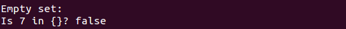
全部设定
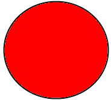
我们S是一组和S'是的子集S，它包含所有要素，All其特色功能。在集合的代数中，S'是包含所有元素的完整集合。因此，All可以这样定义：
All(x) = true if x is in S因此，S'JavaScript中的表示可以定义如下：
all = function() {return function(){return true}}在集合的代数中，All表示如下：
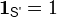
因此，运行以下代码：
print('\nSet All:')
print('Is 7 in integers set? ' + all()(7))给出以下结果：

单身套装
我们E是辛格尔顿集和Singleton它的特色功能。在集合的代数中，E也称为单位集合，或者1元组是具有恰好一个元素的集合e。因此，Singleton可以定义如下：
Singleton(x) = true if x is e
Singleton(x) = false if x is not e因此，EJavaScript中的表示可以定义如下：
singleton = function(x) {return function(y){return x === y}}因此，运行以下代码：
print('\nSingleton set:')
print('Is 7 in the singleton set {0}? ' + singleton(0)(7))
print('Is 7 in the singleton set {7}? ' + singleton(7)(7))给出以下结果：
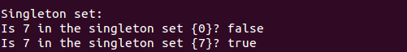
其他套装
本节介绍整数集的子集。
偶数
我们E是一组连号，并且Even它的特色功能。在数学中，偶数是一个2的倍数。因此，Even可以定义如下：
Even(x) = true if x is a multiple of 2
Even(x) = false if x is not a multiple of 2因此，EJavaScript中的表示可以定义如下：
even = function(x){return x%2 === 0}因此，运行以下代码：
print('\nEven numbers set:')
print('Is 99 in even numbers set? ' + even(99))
print('Is 998 in even numbers set? ' + even(998))给出以下结果：

奇数
我们E是一组奇数的和Odd它的特色功能。在数学中，奇数是一个不是2的倍数的数字。因此，Odd可以定义如下：
Odd(x) = true if x is not a multiple of 2
Odd(x) = false if x is a multiple of 2因此，EJavaScript中的表示可以定义如下：
odd = function(x){return x%2 === 1}因此，运行以下代码：
print('\nOdd numbers set:')
print('Is 99 in odd numbers set? ' + odd(99))
print('Is 998 in odd numbers set? ' + odd(998))给出以下结果：

倍数为3
我们E是一组3的倍数和MultipleOfThree它的特色功能。在数学中，3的倍数是可被3整除的数。因此，MultipleOfThree可以定义如下：
MultipleOfThree(x) = true if x is divisible by 3
MultipleOfThree(x) = false if x is not divisible by 3因此，EJavaScript中的表示可以定义如下：
multipleOfThree = function(x){return x%3 === 0}因此，运行以下代码：
print('\nMultiples of 3 set:')
print('Is 99 in multiples of 3 set? ' + multipleOfThree(99))
print('Is 998 in multiples of 3 set? ' + multipleOfThree(998))给出以下结果：
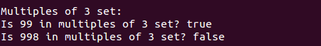
倍数为5
我们E是集合5的倍数和MultipleOfFive它的特色功能。在数学中，5的倍数是可被5整除的数。因此，MultipleOfFive可以定义如下：
MultipleOfFive(x) = true if x is divisible by 5
MultipleOfFive(x) = false if x is not divisible by 5因此，EJavaScript中的表示可以定义如下：
multipleOfFive = function(x){return x%5 === 0}因此，运行以下代码：
print('\nMultiples of 5 set:')
print('Is 15 in multiples of 5 set? ' + multipleOfFive(15))
print('Is 998 in multiples of 5 set? ' + multipleOfFive(998))给出以下结果：
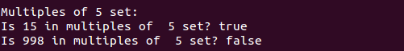
质数
很久以前，当我玩Project Euler问题时，我不得不解决以下问题：
By listing the first six prime numbers: 2, 3, 5, 7, 11, and 13,
we can see that the 6th prime is 13.
What is the 10 001st prime number?为了解决这个问题，我首先必须编写一个快速算法来检查给定的数字是否为素数。编写算法后，我编写了一个迭代算法，迭代遍历素数，直到找到10 001 st素数。
我们E是集合素数的和Prime它的特色功能。在数学中，素数是大于1的自然数，除了1和自身之外没有正除数。因此，Prime可以定义如下：
Prime(x) = true if x is prime
Prime(x) = false if x is not prime因此，EJavaScript中的表示可以定义如下：
prime = function(x){
if(x===1) return false
if(x<4) return true
if(x%2===0) return false
if(x<9) return true
if(x%3===0) return false
var sqrt = Math.sqrt(x)
for(var i = 5; i <= sqrt; i+=6){
if(x%i===0) return false
if(x%(i+2)===0) return false
}
return true
}因此，运行下面的代码来解决我们的问题：
print('\nPrimes set:')
print('Is 2 in primes set? ' + prime(2))
print('Is 4 in primes set? ' + prime(4))
print('The 10 001st prime number is ' + getPrime(10001))其中getPrime定义如下：
getPrime = function(p){
var count = 0;
for(var i = 1; ; i++){
if(prime(i)) count++
if(count === p){
return i
break
}
}
}给出以下结果：

二元操作
本节介绍了从给定集合和操作集合构造新集合的几个基本操作。下面是集合代数中的维恩图。

联盟

让我们E和F两套。该联合的E和F，记为E U F是一组其是成员的所有元素E或F。
让我们Union结合工会。因此，Union可以在JavaScript中按如下方式实现操作：
union = function(e, f){return function(x){ return e(x) || f(x)}}运行以下代码：
print('\nUnion:')
print('Is 7 in the union of Even and Odd Integers Set? ' + union(even,odd)(7))给出以下结果：
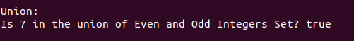
路口
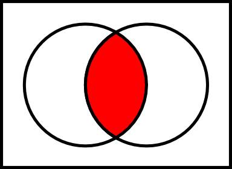
让我们E和F两套。的交叉点的E和F，记为E n F是一组这两者都是成员的所有元素的E和F。
让我们Intersection进行交叉操作。因此，Intersection可以在JavaScript中按如下方式实现操作：
intersection = function(e, f){return function(x){ return e(x) && f(x)}}运行以下代码：
print('\nIntersection:')
multiplesOfThreeAndFive = intersection(multipleOfThree, multipleOfFive)
print('Is 15 a multiple of 3 and 5? ' + multiplesOfThreeAndFive(15))
print('Is 10 a multiple of 3 and 5? ' + multiplesOfThreeAndFive(10))给出以下结果：
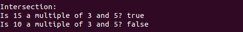
笛卡尔积
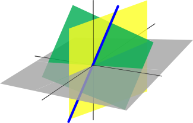
让我们E和F两套。的笛卡儿积的E和F，由表示E × F是该组所有有序对(e, f)，使得e是其成员E和f是其成员F。
让我们CartesianProduct进行笛卡尔积运算。因此，CartesianProduct可以在JavaScript中按如下方式实现操作：
cartesianProduct = function(e, f){return function(x, y){ return e(x) && f(y)}}运行以下代码：
print('\nCartesian Product:')
cp = cartesianProduct(multipleOfThree,multipleOfFive)
print('Is (9, 15) in MultipleOfThree x MultipleOfFive? ' + cp(9, 15))给出以下结果：

补语

让我们E和F两套。的相对补的F中E，由表示E \ F是一组其是成员的所有元件的E但不是成员F。
让我们Complement进行相对补充操作。因此，Complement可以在JavaScript中按如下方式实现操作：
complement = function(e, f){return function(x){ return e(x) && !f(x)}}运行以下代码：
print('\nComplement:')
c = complement(multipleOfThree, multipleOfFive)
print('Is 15 in MultipleOfThree \\ MultipleOfFive set? '+ c(15))
print('Is 9 in MultipleOfThree \\ MultipleOfFive set? '+ c(9))给出以下结果：

对称差异

让我们E和F两套。的对称差的E和F，记为E delta F是一组其是的任成员的所有元素的E和F，但不是在相交E和F。
让我们SymmetricDifference进行对称差分运算。因此，SymmetricDifference可以在JavaScript中以两种方式实现该操作。一个简单的方法是使用union和补充操作如下：
symmetricDifferenceWithoutXor = function(e, f){ return function(x)
{ return union(complement(e,f), complement(f, e))(x)}}另一种方法是使用XOR二进制操作如下：
symmetricDifferenceWithXor = function(e, f){return function(x)
{ return (e(x) ^ f(x)) === 1 ? true : false}}运行以下代码：
print('\nSymmetricDifference without XOR:')
sdWithoutXor = symmetricDifferenceWithoutXor(prime, even)
print('Is 2 in the symetric difference of prime and even Sets? ' + sdWithoutXor(2))
print('Is 4 in the symetric difference of prime and even Sets? ' + sdWithoutXor(4))
print('Is 7 in the symetric difference of prime and even Sets? ' + sdWithoutXor(7))
print('\nSymmetricDifference with XOR:')
sdWithXor = symmetricDifferenceWithXor(prime, even)
print('Is 2 in the symetric difference of prime and even Sets? ', sdWithXor(2))
print('Is 4 in the symetric difference of prime and even Sets? ', sdWithXor(4))
print('Is 7 in the symetric difference of prime and even Sets? ', sdWithXor(7))给出以下结果：

其他行动
本节介绍集合上其他有用的二进制操作。
包含
设Contains是检查元素是否在集合中的操作。此操作是一个函数，它将元素作为参数，true如果元素在集合中则返回，false否则返回。
因此，此操作在JavaScript中定义如下：
contains = function(e, x){return e(x)}因此，运行以下代码：
print('\nContains:')
print('Is 7 in the singleton {0}? ' + contains(singleton(0), 7))
print('Is 7 in the singleton {7}? ' + contains(singleton(7), 7))给出以下结果：

加
让我们Add将一个元素添加到集合中的操作。此操作是一个函数，它将元素作为参数并将其添加到集合中。
因此，此操作在JavaScript中定义如下：
add = function(e, y){return function(x){ return x === y || e(x)}}因此，运行以下代码：
print('\nAdd:')
print('Is 7 in {0, 7}? ' + add(singleton(0),7)(7))
print('Is 0 in {1, 0}? ' + add(singleton(1),0)(0))
print('Is 7 in {19, 0}? ' + add(singleton(19),0)(7))给出以下结果：

去掉
设Remove是从集合中删除元素的操作。此操作是一个函数，它将元素作为参数并将其从集合中删除。
因此，此操作在JavaScript中定义如下：
remove = function(e, y){return function(x){ return x !== y && e(x)}}因此，运行以下代码：
print('\nRemove:')
print('Is 7 in {}? ' + remove(singleton(0), 0)(7))
print('Is 0 in {}? ' + remove(singleton(7), 7)(0))给出以下结果：

对于那些想要更进一步的人
您可以通过函数式编程看到我们可以轻松地在JavaScript中使用集合代数。在前面的部分中，显示了最基本的定义。但是，如果你想进一步，你可以考虑：
- 关系集
- 抽象代数，如幺半群，群，场，环，K-矢量空间等
- 包含 - 排除原则
- 罗素的悖论
- 康托尔的悖论
- 双向量空间
- 定理和推论
欧几里得飞机
在上一节中，集合的基本概念是在JavaScript中实现的。在本节中，我们将练习在平面点集（欧几里德平面）上实现的概念。
绘制磁盘

磁盘是由圆圈限定的平面的子集。有两种类型的磁盘。封闭的磁盘是包含构成其边界的圆的点的磁盘，而打开的磁盘是不包含构成其边界的圆的点的磁盘。
在本节中，我们将成立Characterstic功能的的封闭盘和HTML5绘制。
要设置Charactertic函数，首先需要一个计算平面中两点之间欧氏距离的函数。该功能实现如下：
function distance(p1, p2){
return Math.sqrt(Math.pow(p1.x - p2.x, 2) + Math.pow(p1.y - p2.y, 2))
}其中point定义如下：
point = function(x,y){
this.x = x
this.y = y
}这个公式是基于毕达哥拉斯定理。

其中c是欧几里德距离，a²是(p1.X - p2.X)²和b²是(p1.Y - p2.Y)²。
我们Disk是特色功能的封闭盘。在集合的代数中，实数集中的闭合磁盘的定义如下：

其中a和b是中心和R半径的坐标。
因此，DiskJavaScript中的实现如下：
disk = function(center, radius){return function(p){ return distance(p, center) <= radius}}为了查看集合，我决定实现一个draw在欧几里得平面中绘制集合的函数。我选择了HTML5，因此使用了canvas元素进行绘制。
因此，我通过该方法建立了下面说明的欧几里德平面draw。

下面是飞机的实施。
/*
* Plane
*
*/
plane = function(width, height) {
/**
* Plane width in pixels
*
*/
this.width = width
/**
* Plane height in pixels
*
*/
this.height = height
/*
* Draws a generic set
*
*/
this.draw = function (set, canvasId){
var canvas = document.getElementById(canvasId)
canvas.width = this.width
canvas.height = this.height
var context = canvas.getContext('2d'),
semiWidth = this.width/2, semiHeight = this.height/2,
xMin = -semiWidth, xMax = semiWidth,
yMin = -semiHeight, yMax = semiHeight
for(var x = 0; x < this.width; x++){
var xp = xMin + x * (xMax - xMin) / this.width
for(var y = 0; y < this.height; y++) {
var yp = yMax - y * (yMax - yMin) / this.height
if(set(new point(xp, yp))) context.fillRect(x, y, 1, 1)
}
}
}
}在该draw方法中，创建canvas具有与欧几里德平面容器相同的宽度和相同高度的a 。然后(x,y)，canvas如果属于的是黑点，则每个像素点都被替换为黑点set。xMin，xMax，yMin和yMax 是在的图中所示的边界值欧几里得平面的上方。
运行以下代码：
euclideanPlane = new plane(200, 200)
euclideanPlane.draw(disk(new point(0, 0), 50), 'disk')这里disk是id帆布：
<canvas id="disk">Your browser does not support HTML5 canvas.</canvas>给出以下结果：

绘制水平和垂直半平面
甲水平或垂直半平面或者是两个子集到其中的平面将欧几里德空间。甲水平半平面或者是两个子集到其中的平面垂直通过与所述的线划分的欧几里得空间的Y轴如上面的图中。甲垂直半平面或者是两个子集到其中的平面通过管线垂直与划分欧几里得空间的X轴。
在本节中，我们将设置水平和垂直半平面的特征函数，在HTML5中绘制它们，看看如果我们将它们与磁盘子集组合，我们可以做些什么。
我们HorizontalHalfPlane是特色功能一的水平半平面。HorizontalHalfPlaneJavaScript中的实现如下：
horizontalHalfPlane = function(y, isLowerThan){return function(p)
{ return isLowerThan ? p.y <= y : p.y >= y}}因此，运行以下代码：
euclideanPlane.draw(horizontalHalfPlane(0, true), 'hhp')这里hhp是id帆布：
<canvas id="hhp">Your browser does not support HTML5 canvas.</canvas>给出以下结果：

我们VerticalHalfPlane是特色功能一的垂直半平面。VerticalHalfPlaneJavaScript中的实现如下：
verticalHalfPlane = function(x, isLowerThan){return function(p) { return isLowerThan ? p.x <= x : p.x >= x}}因此，运行以下代码：
euclideanPlane.draw(verticalHalfPlane(0, false), 'vhp')这里vhp是id帆布
<canvas id="vhd">Your browser does not support HTML5 canvas.</canvas>给出以下源码结果：

在本文的第一部分中，我们在集合上设置了基本的二进制操作。因此，通过组合a disk和a 的交集half-plane，我们可以绘制半盘子集。
因此，运行以下示例：
euclideanPlane.draw(intersection(disk(new point(0, 0), 50), verticalHalfPlane(0, false)), 'hd')这里hd是id帆布：
<canvas id="hd">Your browser does not support HTML5 canvas.</canvas>给出以下结果：

功能
本节介绍欧几里德平面上的集合的函数。
翻译

我们translatePoint是翻译在平面上的点的功能。在欧几里德几何中，translatePoint是一个将给定点在指定方向上移动恒定距离的函数。因此，JavaScript中的实现如下：
translatePoint = function(deltax, deltay){return function(p)
{ return new point(p.x + deltax, p.y + deltay)}}其中(deltax, deltay)是翻译的常量向量。
我们translate是转化平面中的设定功能。这个函数在JavaScript中简单地实现如下：
translate = function(e, deltax, deltay){return function(p)
{ return e(translatePoint(-deltax, -deltay)(p))}}translate取deltax第一欧几里德维度中的delta距离作为参数，其是deltay第二欧几里德维度中的delta距离。如果点P（x，y）在集合S中被平移，则其坐标将变为（x'，y'）=（x + delatx，y + deltay）。因此，点（X ' - delatx，Y' - DELTAY）将始终属于集合小号。在集合代数中，translate称为同构，换句话说，所有翻译的集合形成翻译组T，其与空间本身同构。这解释了该功能的主要逻辑。
因此，运行以下代码：
var deltay = 0
setInterval(function(){
deltay = deltay <= euclideanPlane.height ? deltay + 20 : 0
euclideanPlane.draw(translate(disk(new point(0, -50), 50), 0, deltay) , 'ep_op')
}, 1000)这里ep_op是id帆布：
<canvas id="ep_op">Your browser does not support HTML5 canvas.</canvas>给出以下结果：

位似

让scalePoint是发送的任何点的功能中号到另一点Ñ使得段SN是在同一行作为SM，而是由一个因子缩放拉姆达。在集的代数中，Scale表述如下：

因此，JavaScript中的实现如下：
scalePoint = function(lambdax, lambday, deltax, deltay)
{return function(p){ return new point(lambdax * p.x + deltax, lambday * p.y + deltay)}}其中(deltax, deltay)是平移的常数向量，(lambdax, lambday)是lambda向量。
让我们scale在计划中的集合上应用同一性的功能。这个函数在JavaScript中简单地实现如下：
scale = function(e, lambdax, lambday, deltax, deltay)
{return function(p){ return e(scalePoint(1/lambdax, 1/lambday,
-deltax/lambdax, -deltay/lambday)(p))}}scale取deltax第一欧几里德维度中的Δ距离作为参数，该第一欧几里德维度deltay是第二欧几里德维度中的Δ距离，并且(lambdax, lambday)是恒定因子向量λ。如果点P（x，y）scale在集合S中变换，则其坐标将变为（x'，y'）=（lambdax * x + delatx，lambday * y + deltay）。因此，点（（x'- delatx）/ lambdax，（y' - deltay）/ lambday）将始终属于集合S，当然，如果lambda不同于向量0。在集合的代数中，scale称为同构，换句话说，所有同态的集合形成Homothety组H，与空间本身\ {0}同构。这解释了该功能的主要逻辑。
因此，运行以下代码：
var deltay = 0, lambday = 0.05
setInterval(function(){
deltay = deltay <= euclideanPlane.height ? deltay + 20 : 0
lambday = deltay <= euclideanPlane.height ? lambday + 0.05 : 0.05
euclideanPlane.draw(scale(disk(new point(0, -50), 50), 1, lambday, 0, deltay), 'ep_op')
}, 1000)给出以下结果：

旋转

我们rotatePoint是用旋转的角度2θ位置的点的功能。在矩阵代数中，rotatePoint表述如下：

其中（x'，y'）是旋转后点的坐标，x'和y'的公式如下：

这个公式的演示非常简单。看看这个轮换。

以下是演示：

因此，JavaScript中的实现如下：
rotatePoint = function(theta){ return function(p)
{ return new point(p.x*Math.cos(theta)-p.y*Math.sin(theta),
p.x*Math.sin(theta)+p.y*Math.cos(theta))}}我们rotate是在与角度theta平面一套适用的旋转功能。这个函数在JavaScript中简单地实现如下。
rotate = function(e, theta){ return function(p){return e(rotatePoint(-theta)(p))}}rotate是一个作为参数的函数，theta它是旋转的角度。如果点P（x，y）rotate在集合S中变换，那么它的坐标将变为（x'，y'）=（x * cos（theta） - y * sin（theta），x * sin（ theta）+ y * cos（theta））。因此，点（X '* COS（THETA）+ Y' * SIN（THETA），Y '* COS（THETA） - X' * SIN（THETA））将永远属于一套小号。在集合的代数中，rotate称为同构，换句话说，所有旋转的集合形成旋转组R，其与空间本身同构。这解释了该功能的主要逻辑。
因此，运行以下代码：
var theta = 0
setInterval(function(){
euclideanPlane.draw(rotate(horizontalHalfPlane(-90, true), theta), 'ep_op')
theta = (theta + Math.PI/2)%(2*Math.PI)
}, 1000)给出以下结果：

对于那些想要更进一步的人
很简单，不是吗？对于那些想要更进一步的人，你可以探索这些：
- 椭圆
- 三维欧氏空间
- Ellipsoide
- 抛物面
- 双曲面
- 球谐波
- Superellipsoid
- 妊神星
- 同形体
- Focaloid
分形

分形是具有通常超过其拓扑维度并且可能落在整数之间的分形维数的集合。例如，Mandelbrot集是由一系列复数二次多项式定义的分形：
Pc(z) = z^2 + c哪里c是复杂的。所述曼德尔布罗分形被定义为所有点的集合c，使得上述序列不逃逸到无穷远。在集合的代数中，这表达如下：

Fractals（抽象数据类型）总是可以在JavaScript中表示如下：
function fractal() {}复数和绘图
为了能够绘制分形，我需要操纵复数。因此，我创建了complex以下类：
complex = function(r, i){
this.x = r
this.y = i
}
complex.prototype.toString = function(){
return this.x + ' + i * ' + this.y
}
complex.prototype.abs = function(){
return Math.sqrt(this.x*this.x+this.y*this.y)
}
complex.add = function(z1, z2){
return new complex(z1.x+z2.x, z1.y+z2.y)
}
complex.substract = function(z1, z2){
return new complex(z1.x-z2.x, z1.y-z2.y)
}
complex.multiply = function(z1, z2){
return new complex(z1.x*z2.x - z1.y * z2.y, z1.x * z2.y+ z1.y * z2.x)
}
complex.zero = new complex(0, 0)Mandelbrot分形
我创建了一个Mandelbrot Fractal（抽象数据类型表示）P(z) = z^2 + c，可在下面找到。
mandelbrot = function(c, z){return complex.add(complex.multiply(z, z), c)}为了能够绘制复数，我创建了一个complexPlane类。以下是JavaScript中的实现。
/*
* Plane
*
*/
complexPlane = function(width, height, real_min, real_max,
imaginary_min, imaginary_max, boundary, fractalIterationsPerPixel, canvasId) {
/**
* Plane width in pixels
*
*/
this.width = width
/**
* Plane height in pixels
*
*/
this.height = height
/**
* Real axis minimum value
*
*/
this.real_min = real_min
/**
* Real axis maximum value
*
*/
this.real_max = real_max
/**
* Imaginary axis minimum value
*
*/
this.imaginary_min = imaginary_min
/**
* Imaginary axis maximum value
*
*/
this.imaginary_max = imaginary_max
/**
* Boudary
*
*/
this.boundary = boundary
/**
* Number of Zn iterations per pixel
*
*/
this.fractalIterationsPerPixel = fractalIterationsPerPixel
/**
* Canvas Identifier
*
*/
this.canvasId = canvasId
/*
* Draws a fractal
*
*/
this.draw = function (fractal){
var canvas = document.getElementById(this.canvasId)
canvas.width = this.width
canvas.height = this.height
var context = canvas.getContext('2d')
context.fillStyle = 'yellow'
for(var x = 0; x < this.width; x++){
var xp = this.real_min + x * (this.real_max - this.real_min) / this.width
for(var y = 0; y < this.height; y++) {
var yp = this.imaginary_max - y *
(this.imaginary_max - this.imaginary_min) / this.height
var c = new complex(xp, yp)
var z = complex.zero
for(var k=0; k< this.fractalIterationsPerPixel;k++) z = fractal(c, z)
if(z.abs() < this.boundary) context.fillRect(x, y, 1, 1)
}
}
}
/*
* Displays 'Please wait...' at the center of the canvas
*
*/
this.pleaseWait = function(){
var canvas = document.getElementById(this.canvasId)
canvas.width = this.width
canvas.height = this.height
var context = canvas.getContext('2d')
context.fillStyle = 'yellow'
context.fillText('Please wait...', this.width/2 - 30, this.height/2)
}
}因此，运行以下代码：
complexPlane = new complexPlane(300, 300, -1.5, 1.5, -1.5, 1.5, 1.5, 20, 'fractal')
mandelbrot = function(c, z){return complex.add(complex.multiply(z, z), c)}
complexPlane.pleaseWait()
setTimeout(function(){ complexPlane.draw(mandelbrot) }, 500)这里fractal是id帆布：
<canvas id="fractal">Your browser does not support HTML5 canvas.</canvas>给出以下结果：